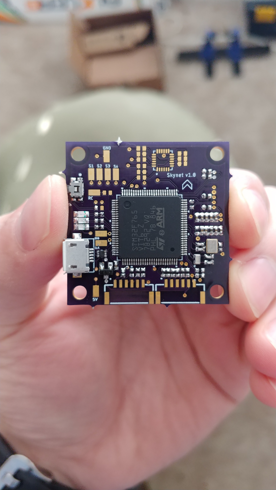
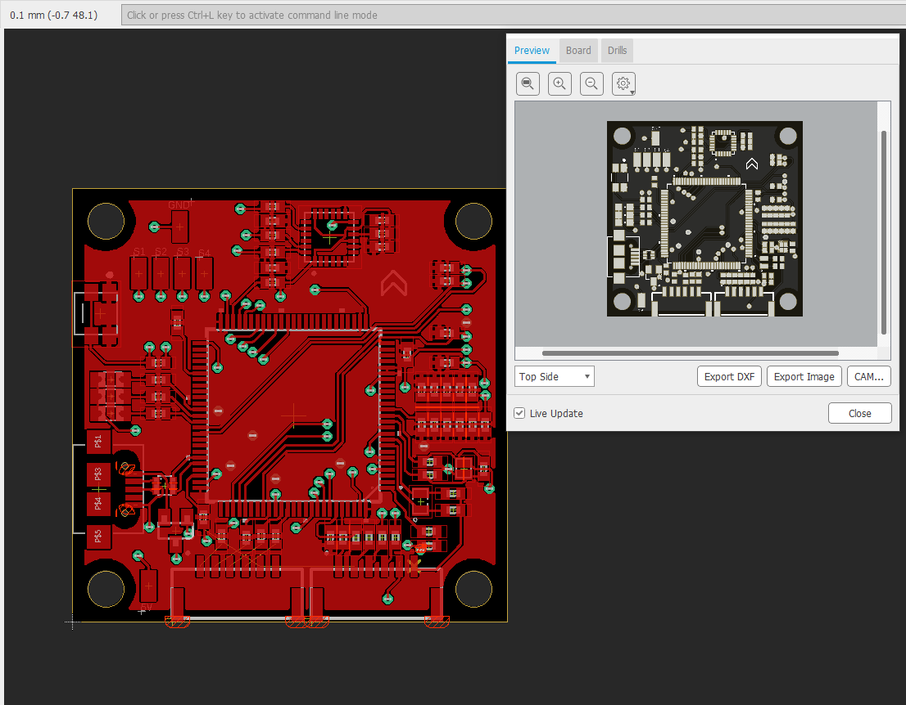
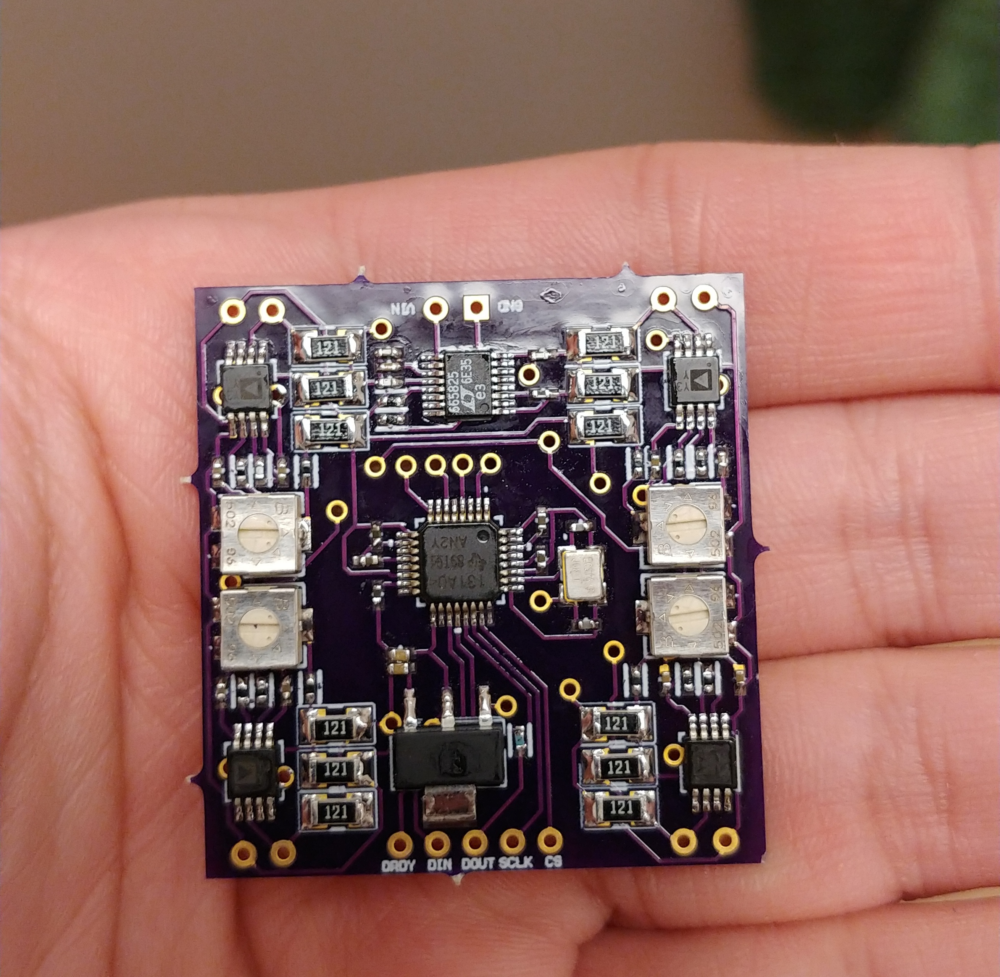
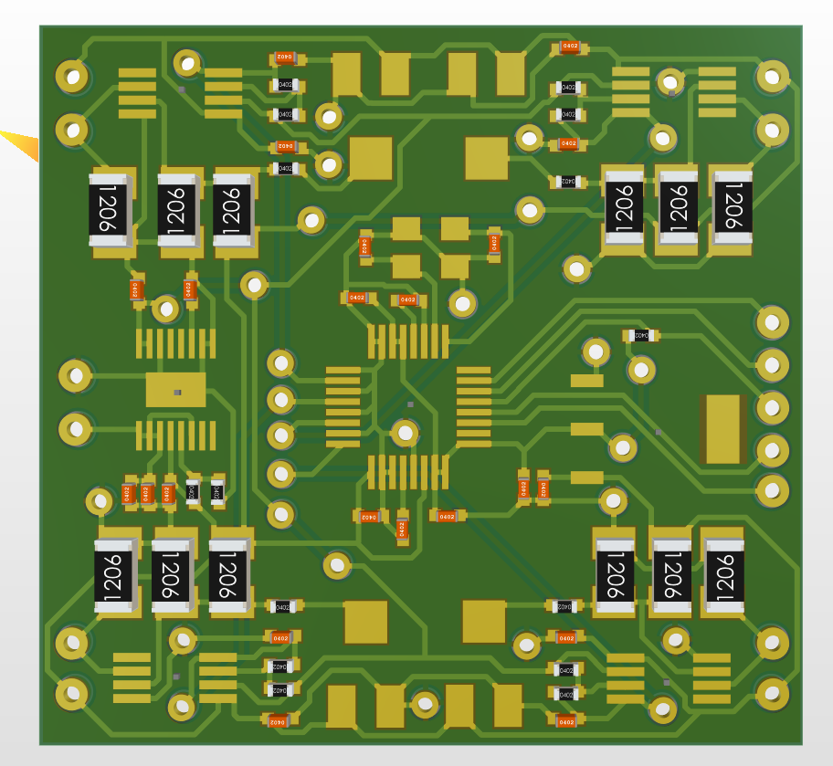
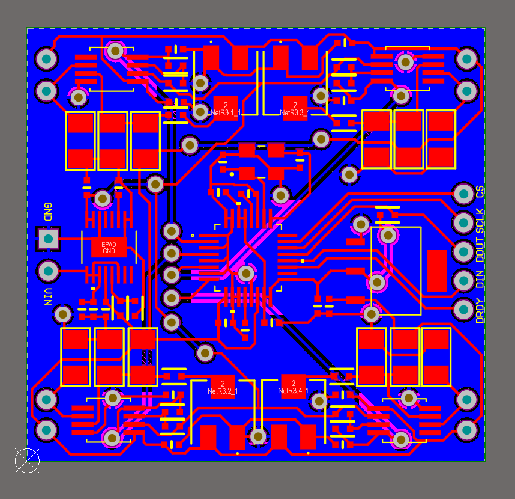

Designing Printed Circuit Boards for Drones
Custom Flight Controller
A custom flight controller PCB designed from scratch featuring an STM32 ARM microcontroller with interfaces for gyroscope, GPS, PWM motor outputs, USB, and various sensor buses (I2C, SPI). PX4 autopilot was ported to the board. This was an introduction to circuit design and working with the STM32 hardware abstraction layer (HAL).




Wheatstone Bridge Strain Gauge Board
A custom Wheatstone bridge PCB designed to add strain gauges to each arm of a quadrotor drone. This allowed isolating motor thrust from other external forces measured by the IMU, enabling in flight motor failure isolation and thrust estimation.



